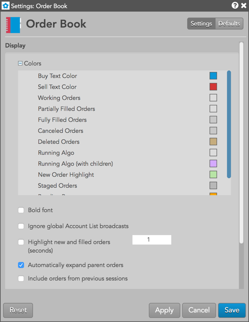
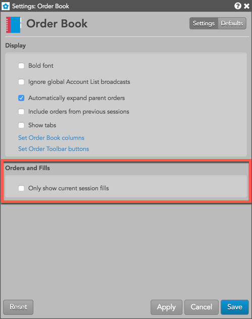
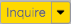
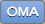
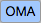
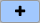
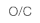
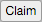
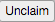

These settings affect only the selected Order Book widget. To update the default settings with these value for newly-opened Order Book widgets, or to apply them to existing opened widgets, click Defaults.

| Setting | Description |
|---|---|
| Cancel All | Set whether to require a confirmation when canceling all orders, including all buy orders or all sell orders. |
| Setting | Description |
|---|---|
| Grid font size | Adjust the font size to suit your preferences and use bold text, if desired. |
| Bold font | Set whether to use bold text in the widget. |
| Ignore global Account List broadcasts | {% include settings/ignore-acct-list.html %} |
| Automatically expand parent orders | Set whether to display child orders for a parent order automatically. |
| Include orders from previous sessions | Set whether to display orders from only the current session or whether to include orders from previous sessions as well. |
| Show tabs | Set whether to display the tab bar at the bottom of the widget |
| Set Order Book columns | Select the columns you want shown in the Order Book. |
| Set Order Toolbar buttons | Select the columns you want shown in the Order Book. |
Note: The Orders and Fills section is only displayed when opening the Order Book settings from the Orders and Fills widget.

| Setting | Description |
|---|---|
| Only show current session fills | When enabled, selected orders in the Order Book panel display fills only from the current trading session (including overnight fills) in the lower Fills and Positions panels. |
| Button | Description |
|---|---|
| <space> | Provides optional visual spacing between two buttons |
| Completes a block order transaction. | |
|
Deletes the selected orders, or all visible Buys, Sells, or orders. Orders hidden due to filters are not deleted. |
| Reprices the selected order downward one tick. | |
|
Removes an order (native or synthetic) from the market but stores it on the TT order server for later execution. Held orders are stored in short-term memory. If the order server process goes down, the held order information is lost. Until you click the Submit button the order remains held and out of the market. |
|  | Sends an inquiry to the exchange for a block order. |
|  | Launches a custom algo for the selected order |
|
Modifies the parameters for an algo parent order. |
|  | Selects an OMA algo to launch for the selected order. |
|  | Adds a button to launch an available OMA algo. |
|  | Indicates the type of position you are establishing with the selected order. |
| Pauses a working algo. | |
| Opens an Order Ticket with a replica of the selected order. You can send the same order or alter it as desired. | |
| Resumes a paused algo. | |
|
Submits held orders to the exchange. When you submit a held order, it receives a new order number. The Audit Trail indicates if a submit fails. |
| Reprices the selected order upward one tick. | |
|
Displays the history of activity for the selected order. |
|  | Claims a care order. The user who claims the staged order is the owner. |
|  | Unclaims a care order. The user who unclaims the staged owner gives up ownership and the order is available to be claimed by another user. |